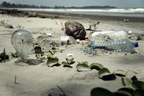

Toxic Waste site needs your attention
Please join us in urging policymakers to better monitor and fix the country’s citizens and counties from dangerous and toxic waste. Policymakers are — finally — changing this rule to better protect citizens and their environment. Please sign the petition below telling EPA leaders to get it right.
Mr. Bob Perciasepe, Acting Administrator
Dear Acting Administrator Perciasepe,
EPA and its Protection Standards are designed to protect citizens from toxic effects of waste. The citizens of America are rising to the occasion to help identify the languished sites leveraging real-time mobile technologies to reduce the impact to their families who continue to experience harm from toxic waste.
We urge you to make a plan and fix these high impacting sites, improving the policies/rules/standards and strengthening them in ways that are truly protective, including providing all citizens with the following:
- 1. More complete and regular training on health risks of toxic waste; safety measures they can take to protect themselves and their families; their families and landlord’s responsibilities to ensure their safety; and their rights as occupants. These trainings must be offered more often than the current requirement of every 5 years.
- 2. Timely information (in an accessible format), about the timing, location and hazards of specific toxic waste on the site where they live or work.
- 3. Special protections for toxic waste handlers and disposal workers.
- 4. Improved enforcement of safety standards at the state and county level.
We hope the revised Environment Protection Standards are significantly stronger, and more effectively protect citizens and their families.
Please Submit Your Toxic Info to the Local Authorities
(* required fields)